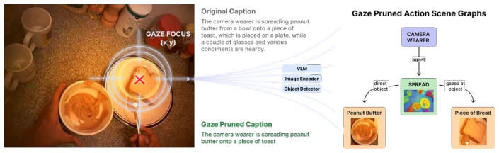
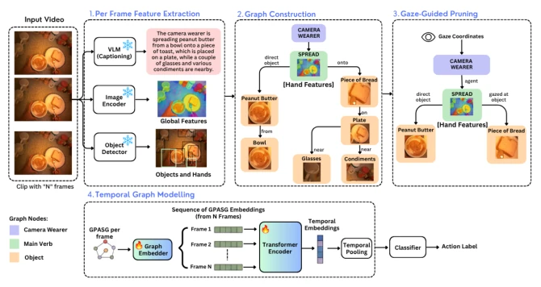
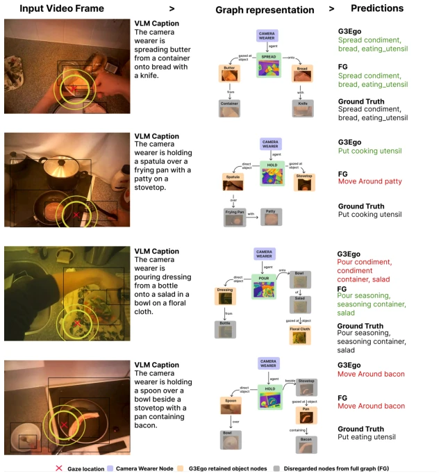

The paper G3Ego can be considered a strong remedy for the "video pre-training dependency syndrome" in egocentric action recognition. The authors did not take the conventional path of piling up massive video models, but instead devised a "tailored to the occasion" graph construction strategy: using gaze as scissors to cut away all irrelevant clutter in the scene graph, keeping only the protagonists (hands, objects, verbs). This idea is quite refreshing, after all, egocentric videos are full of background noise, and the ability to focus is the way to go. However, this method relies too heavily on Vision Language Models (VLM) and object detectors; if these "front-end tools" fail, the subsequent graph is useless no matter how refined. Moreover, although it saves video pre-training, the multimodal pipeline during inference (VLM+GroundingDINO) is not computationally light; the so-called "efficiency" is more about fewer model parameters rather than smaller computational load. Overall, it is a smart attempt to find a balance between "sparse sampling" and "structured reasoning", but it is still far from true end-to-end real-time application.
The biggest pain point facing Egocentric action recognition is: videos are filled with a large amount of background information unrelated to the current action, and perspectives switch frequently, causing video-based models relying solely on RGB frames to often require massive amounts of Exocentric data pre-training to converge, resulting in high generalization costs and expensive computation [14, 36, 66]. Although existing methods introduce gaze as an auxiliary signal or attention mechanism [12, 22, 35, 48], most treat it as additional input features rather than the intrinsic logic for constructing scene structure. This makes it difficult for models to accurately extract the core semantics of "who is doing what" from complex visual noise. Furthermore, many graph-based methods still rely on dense video backbone networks or require expensive manual annotations to construct scene graphs [23, 45, 60], making them unable to adapt to unconstrained egocentric scenes. G3Ego aims to resolve this contradiction: how to utilize gaze as a structural clue to construct compact, interpretable, and key-interaction-focused action scene graphs without relying on large-scale video pre-training.

Fig. 1: Motivational overview of gaze-guided graph construction. Given an input egocentric frame and the camera wearer’s gaze coordinates, a vision-language model generates a caption describing the camera wearer’s interactions with the scene. Gaze is used to prune the caption, retaining only action-relevant objects. In this ex- ample, the gaze falls on the piece of bread. An action scene graph is then constructed using the global image descriptors from the image encoder as node features for the main verb, and local descriptors from the object detector, including bounding-box features, for the retained objects.
The core of G3Ego is a "sparse sampling + gaze pruning" graph construction and modeling Pipeline. The overall process is as follows: First, perform sparse frame sampling on the input video; Second, use a frozen visual encoder (DINOv3) to extract global features, and generate semantic descriptions containing verbs, objects, and relationships through a Vision Language Model (VLM); Next, use an open-vocabulary detector (GroundingDINO) for object and hand localization and feature extraction; The most critical step is "gaze-guided pruning": the system calculates the object nearest to the gaze point based on the wearer's gaze coordinates, retaining only that object, the main verb node, the camera wearer node, and key objects directly participating in the action, removing all irrelevant background nodes to form a compact Gaze-Guided Graph; Finally, embed these graphs as fixed-dimension vectors, perform temporal aggregation through a Transformer encoder, and complete action recognition and prediction. Innovations lie in: 1. Gaze as Structure: Unlike previous methods treating gaze as auxiliary input, this paper treats it as a hard rule for graph pruning, directly determining the graph's topological structure and significantly reducing noise interference. 2. Multimodal Fusion: Explicitly fuses global visual descriptions, local object features, hand interaction features (20-dimensional vectors), and semantic relation matrices within graph nodes. 3. Lightweight Temporal Modeling: Utilizes Transformer to aggregate sparse graph sequences, avoiding the traditional video model's reliance on dense frames.

Fig. 2: Overview of the proposed G3Ego framework. Given a clip of N frames, we extract global, object, and hand features, construct a graph of the camera wearer’s interactions with the scene, and prune it using gaze. The resulting graph descriptors are temporally aggregated for action recognition.
The paper was validated on two classic egocentric datasets: MECCANO and EGTEA Gaze+. Baseline comparisons covered methods relying on Exocentric pre-training (such as SlowFast, Swin3D) and methods relying solely on Egocentric fine-tuning. Evaluation metrics focused on Top-1/Top-5 accuracy and Macro-F1, which better reflect class imbalance. Results show that G3Ego achieved the highest Macro-F1 (21.34) on MECCANO, outperforming all comparative baselines, proving its robustness under long-tail distributions; On EGTEA Gaze+, its average accuracy (56.49) also ranked among the top. Ablation studies indicate that the gaze pruning strategy significantly improved performance (Macro-F1 increased by about 2 points), and the effect was better after introducing hand features. Efficiency analysis shows that the number of pruned graph nodes decreased by about 72%, significantly improving global efficiency, verifying the effectiveness of "denoising". However, on the action anticipation task, Top-1 accuracy was slightly lower than some baselines, mainly limited by evaluation bias caused by long-tail distributions.

Fig. 3: Qualitative examples of action classification predictions with the ground-truth labels. For each sample, we visualize the full action scene graph (FG) and the cor- responding gaze-guided graph. Gaze-guided pruning preserves action-relevant entities and relationships while removing irrelevant context, yielding more discriminative graph representations and improved action recognition.